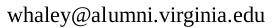

Bob Whaley
Open Canoe Paddler


Bob Whaley was born June 22nd, 1926 in Victoria, Virginia. He was the fourth of 4 brothers and has a younger sister. As a child, he loved to swim in the nearby reservoir and play in the water and on the rocks at Nottoway falls. At 12 or 13, with money from his paper route, he purchased a wood frame canvas kayak that had been built in the Victoria High School shop. He paddled this kayak on the reservoir and on the James river near Williamsburg.
Just before he turned 18 in 1944 during WWII he enlisted in the Navy. He received engineering training at Gulfport, Mississippi on the Gulf of Mexico. After completing his training, he was stationed at the Golden Gate racetrack on San Francisco Bay. He shipped out and worked in the engine room of LST and LSM ships in the Pacific. He swam and body surfed at Waikiki beach, Enewetak atoll, and Guam. After the surrender his ships visited Bohia Bay, Tianjin (formerly Tientsin), China and in Tokyo Bay, Japan.
On the GI bill, he graduated from Virginia Tech in 1950. He married Sally Ingle in 1952. They lived in Richmond where he worked for American Tobacco manufacturing cigarettes in Shockoe Bottom near the James river fall line. They had a son, Robert, Jr. in 1954. Bob changed careers to manufacturing books when he moved to Berryville Virginia. Their daughter Beth was born in 1960.
The family moved back to Richmond in 1961 and then to Rockville, Maryland (not far from Great Falls) in 1965. In 1967 the family moved to Charlottesville. Shortly after moving to Charlottesville, Bob starting paddling again. He put together a Folbot kayak kit in the basement and made only a few river trips before it was pinned and destroyed in the Moormans River between the Doyle River confluence and Millington bridge. He graduated to fiberglass canoes and then aluminum canoes (briefly including an aluminum square stern canoe).
Inspired by Randy Carter's guide book he became more adventurous. He started to systematically canoe the streams of Virginia and neighboring states. He paddled only open canoes (until much later when he occasionally tried inflatables and rafts). He used home made flotation from discarded industrial chemical containers. In the 1970s he began to paddle much more challenging white water with young friends who used decked boats.
He was one of the first open boat paddlers through Goshen Pass using his 17 foot Grumman.
To keep track of his trips he created a huge 9 foot by 8 foot map patched together from 20 USGS topographical maps. He pasted the map to a wall in his house. The map includes most of Virginia and West Virginia and parts of neighboring states. He would ink in each new section and was always interested in paddling missing sections in order to complete entire watersheds. You can see the map here and with points of interest added here (on these maps a click will zoom in to show details).
He started to travel further from Charlottesville. Initially he traveled to West Virginia, North Carolina, Tennessee, and Georgia. His first wilderness trip was to the Romaine River in Quebec in 1978. In the 1980s he made several more wilderness trips to Labrador and Quebec, Canada. He traveled to paddle rivers in the Western United States. In 1989 he retired and made an epic trip to Alaska and other points in the West. He returned to Alaska and paddled the length of the Yukon river in 1992. Over the years he made numerous trips to the West paddling many rivers including the Rio Grande, Colorado, Green, Salmon, Snake and Owyhee.
He continued to paddle until 2010 when he was 84 years old. His last trip was on the Moormans River, starting on the Doyle River, under the Millington bridge, finishing at the Free Union bridge.
Bob passed away July 4th, 2023, twelve days after his 97th birthday. He is survived by Sally his wife of 71 years, his sister Janet of Charlottesville, his son Robert (Susan) of Charlottesville, his daugher Beth Johnson (Warren) of Suffolk, His grandchildren Christopher Johnson (Ashley) of South Carolina, and Mary Beth Miller (Alan), and his great-grandchildren Sarah Embry, Holton, and Elliott Miller of Orange.
We can be contacted at  with images and stories to be added to his maps.